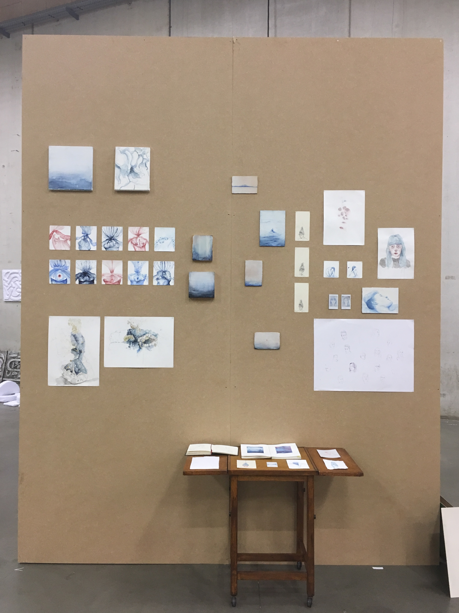

About me and my work

I am a master student at Luca School of Arts in Ghent, Belgium. I create drawings, oil paintings, animations and watercolor paintings.
My work is related to human vulnerability and fragility. Vulnerability is often seen as a negative and I want to show that it contains enormous strength, even though it is not something that is easy. That’s why I want to show a hard truth associated with solace.
I would like to stimulate the viewer's senses and invite them to really experience the image. In addition, I want to give the viewer a moment of wonder, silence and introspection.
